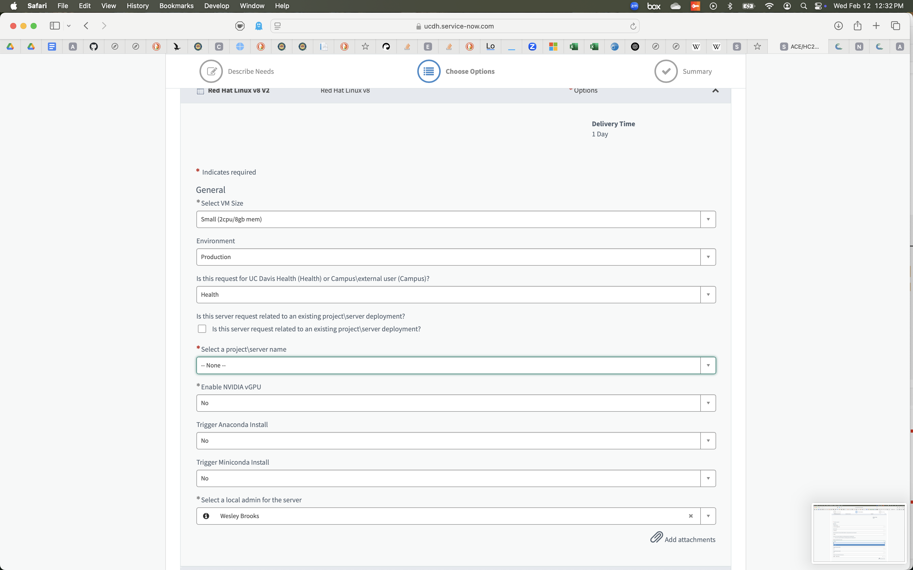
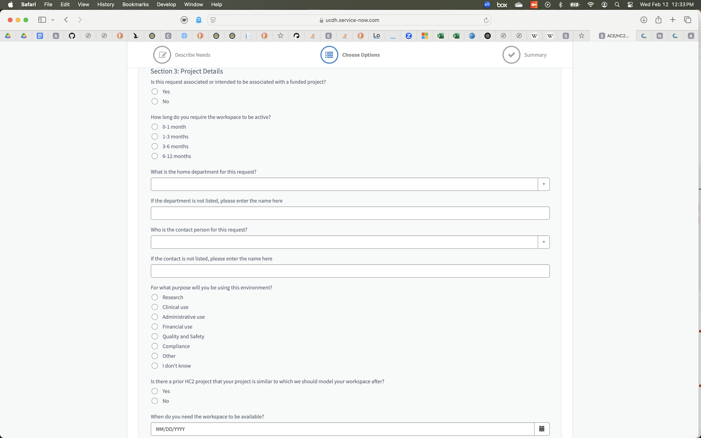

3. Advanced Compute Environment (ACE)#
UCDH has set up a powerful on-site compute environment called ACE because researchers often require significant computational resources but medical data generaly cannot leave the hospital’s servers. ACE is a system that lets researchers request a virtual machine (VM) with the necessary resources for a project. VMs on ACE are provided for a limited duration (up to a year, according to the request form), then returned to the pool of resources. As such, they are useful for computation but should not be used for long-term data storage.
3.1. Requesting an ACE VM#
Requesting an ACE VM is done through Service Now. Search for the “ACE/HC2 Order Guide” and you’ll end up at the form seen here in the screenshot.

When you request a VM, there are three pages of options to fill out. Here we’ll walk you through them:
3.1.1. First screen#
This screen has some options that you ned to fil out before you add the ACE order to your cart.
3.1.1.1. Size#
The small and medium options are well-explained on th request screen. If you select “custom”, you’ll have to expain what you want in a free-text entry box when you submit your order.
3.1.1.2. Operating System#
The listed choices are Windows and Red Hat Linux. You can get a different Linux ditribution (e.g. Ubuntu) by selecting Red Hat and then making a specific request in the free-text entry box when you submit your order.
3.1.1.3. Do You Require a GPU?#
Only select yes if you are specifically going to implement a machine learning model in a way that takes advantage of a GPU.
3.1.1.4. GUI or Command Line#
Strangely, the dropdown menu labeled “What software application will be required in the workspace?” is really about deciding whether you want a graphical user interface (GUI) or a command line interface (CLI). For a GUI, select Anaconda from the dropdown menu and for a CLI, select Miniconda or “None”. You can use whatever environment manager software you wish on ACE – pixi is Wes and Nick’s current favorite.
3.1.2. Second Page#
Once a new ACE VM is added to your cart, you can check out to submit a request for provisioning the new VM.


3.2. Connecting#
Beore you can connect to your new VM, someone in UCDH IT must create it and then contact you with login inoformation. As of now, that person is generally Chris Lambertus. You will get an email from him with a username and password to use for your connection (the username may match your UC Davis identity but the password will deinitely not.)
3.2.1. Join the VPN#
Before you can connect to the VM, you must join the UCDH VPN. The official VPN client is Cisco AnyConnect, but you can also use OpenConnect on a computer that uses the Mac or Linux operating systems. The address for VPN login is connect.ucdmc.ucdavis.edu, so the command for connecting to the VPN via OpenConnect is the following:
sudo openconnect --protocol=anyconnect connect.ucdmc.ucdavis.edu
Since this is a sudo command, you wil first have to enter your conputer’s password. Then you must enter your UCDH login credentials (which is generally different than your UCD login credentials.) The username must be prefaced by hs\, so even though my username is wbrooks, I log into the VPN with username hs\wbrooks. Then enter your UCDH password at the next prompt and finally complete a Duo two-actor authentication in order to join the VPN.
3.2.2. Connect to ACE#
Now you are ready to connect to your ACE VM. If you requested a Windows VM with a desktop, then you will use Microsoft Remote Desktop to connect. I tend to request a Linux VM with no graphical interface, so I connect via SSH. In either case, the address to connect to is the numerical IP that will have been sent to you by Chris Lambertus in response to your ServiceNow request. He will have also sent a password via an encrypted email (you’ll need to follow a link in that email to a web interface where the password can be decrypted.) Once you’ve logged in, I recommend adding you work computer’s SSH public key to the file ~/.ssh/authorized_keys on the VM. That way you won’t have to enter the password each time you want to connect. (See Datalab’s workshop Introduction to Remote Computing)